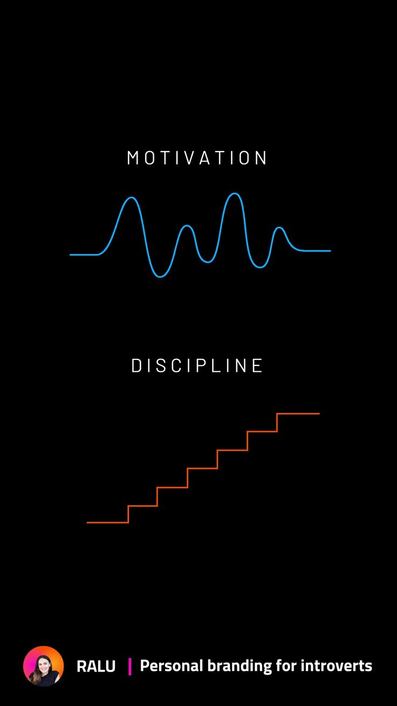
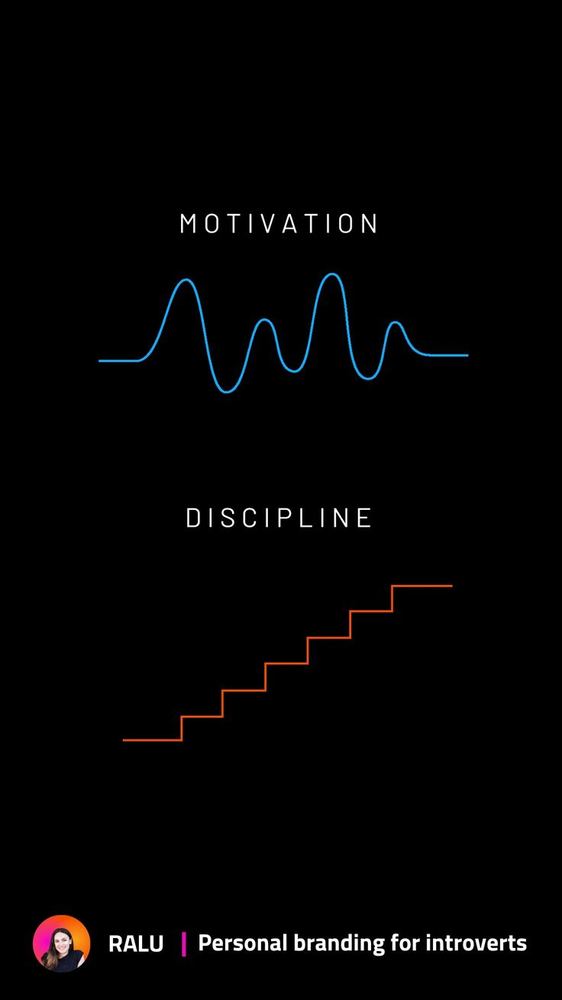

Il termine motivazione deriva dal latino motus, che significa "muoversi verso", "andare incontro a". La motivazione, quindi, è ciò che spinge una persona ad agire, a intraprendere un percorso, a inseguire un obiettivo. Senza motivazione, difficilmente ci muoveremmo nella direzione di qualcosa di significativo. È la scintilla iniziale che accende il desiderio di cambiare, di migliorarsi, di iniziare un nuovo progetto. Non esistono persone prive di motivazione: essa è una forza innata che abita in ognuno di noi, una presenza costante, anche se a volte silenziosa.
Tuttavia, la motivazione da sola non basta. Per sua natura, è fluttuante: va e viene. Quante volte ci siamo sentiti pieni di entusiasmo all’inizio di un’attività — come allenarsi, studiare, leggere o scrivere — solo per poi vedere quell’entusiasmo svanire dopo pochi giorni? È una dinamica comune.
Ed è qui che entra in gioco la disciplina. Se la motivazione accende il motore, è la disciplina a farlo funzionare giorno dopo giorno. La disciplina è ciò che ci permette di continuare anche quando l’entusiasmo iniziale si è affievolito, quando la fatica si fa sentire, quando le distrazioni ci tentano. Essa garantisce la costanza, la ripetizione quotidiana delle azioni che ci portano verso i nostri obiettivi, indipendentemente da come ci sentiamo. Ed è proprio questa costanza, più della passione momentanea, a determinare il successo a lungo termine.